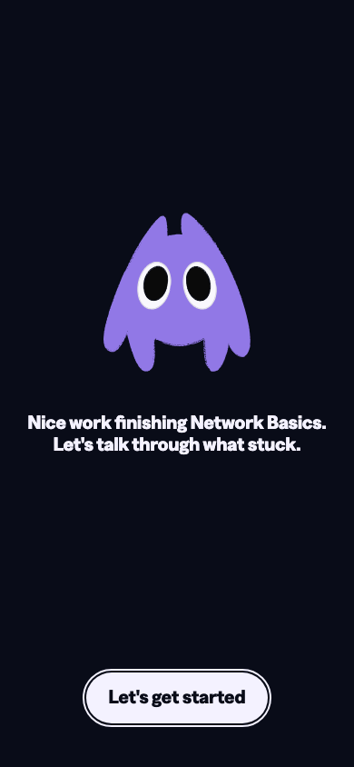
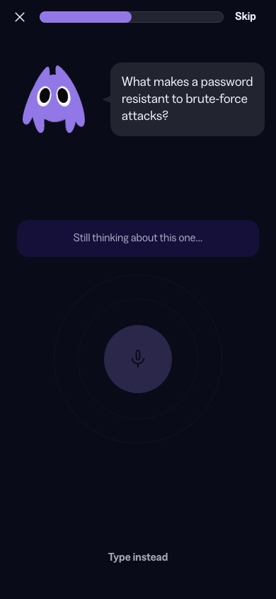
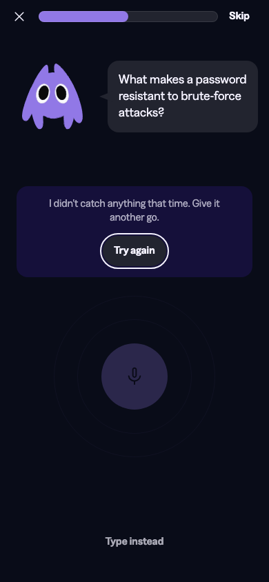
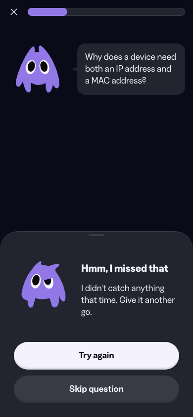
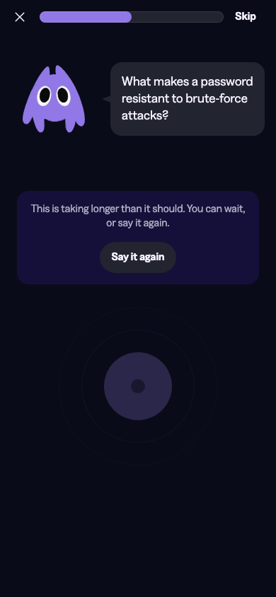
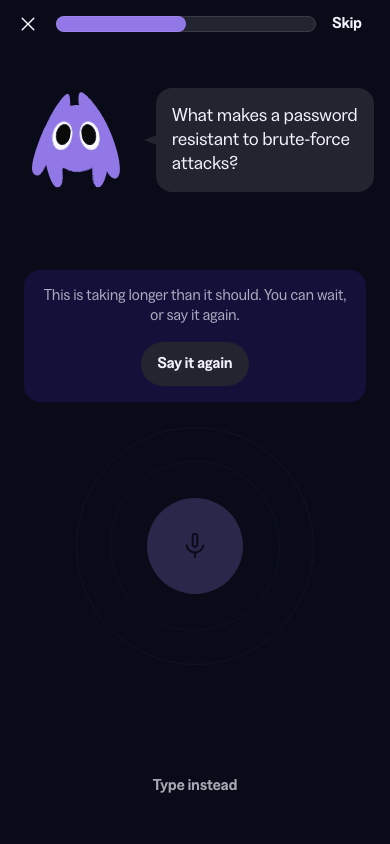
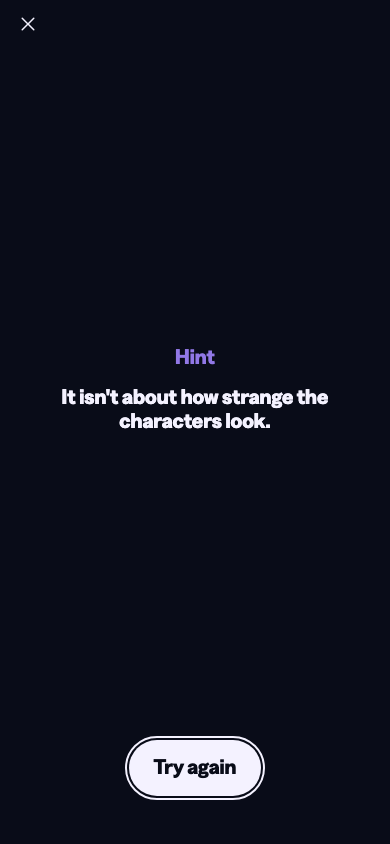
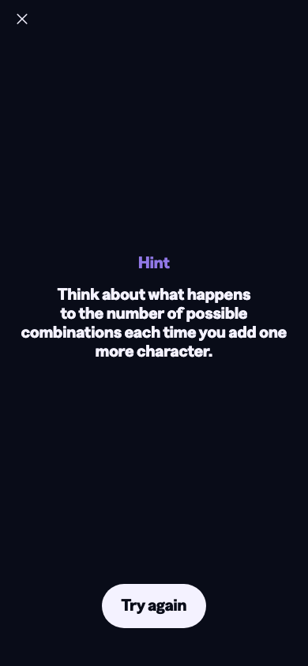
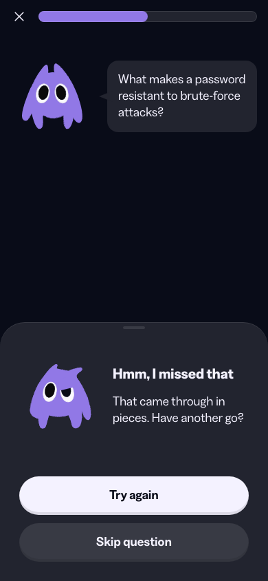
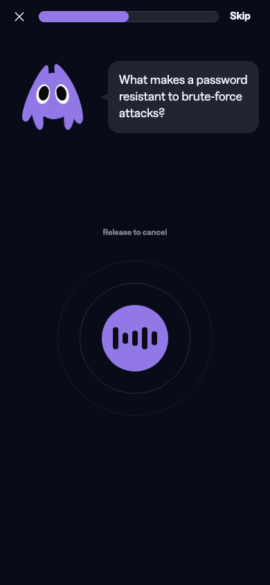

R1 · PrimerIdentical


The refusal is never shown in Storybook: the stub's result only goes to a mock callback. The app does show it (app_primer_refused_next).
From the three adversarial critics. Weights High = 3, Medium = 2, Low = 1 (assumed; the rubric names weights but not numbers). 78 ÷ 15.
Ticks mark the rubric's anchors: 4 broken · 6 legible, nothing broken · 9 survives senior critique. No dimension reached 8, so no score needed its verification checked.
Any failure here blocks the work, whatever the weighted total says.
Lowest is 4.65:1: text/tertiary on background/page, the 12px hint line (VoiceTurn.module.css:56). Others: notice 7.99, “Type instead” 8.40, overlay label 5.60, chips 6.77 / 6.64, sheet body 13.31, CTAs 17.63 / 10.24.
“Type instead”: painted 85×20, hit 86×44. Chips: painted 54×32, hit 56×44. Retry 92×44. Close and Skip 48×48. Circle 161×161. Sheet CTAs 56 tall. Overlay CTA 132×56.
critic-ux · confirmed by critic-craftnpm run check:tokens printed “No raw hex colours in app/.” and exited 0.
Partial vs fail (app_q3_partial vs app_q3_fail): title, panel, mascot and buttons are pixel-identical. Only rows 575–637, the summary sentence, differ, and that sentence doesn't encode the verdict.
Every state was screenshotted at 390×844 in dark mode, then compared in pairs. A pixel counts as changed when its RGB delta is over 24. None of these flags was passed to a critic.

The refusal is never shown in Storybook: the stub's result only goes to a mock callback. The app does show it (app_primer_refused_next).

Both notices appear at the fixed 2s judge mark (useRecallSession.ts:211-226), so the 4s soft → 8s retry sequence never plays.


The “nothing heard” and “garbled” notices exist only in Storybook. The session sends both to the unsure sheet (RecallSession.tsx:206-210).


The stories pass processing: true, which draws the processing dot. The session never does, so it shows a faded idle mic.


Both labels read “Hint”. The app labels “Hint 1” and “Hint 2” correctly.
Title, Knowie, colours and buttons are the same; only the summary sentence changes. Critic-ux later failed the gate on this pair.

Summary sentence only.

The circle doesn't change. Only the 12px caption above it does, and releasing does the opposite thing.
Critics working blind reached these independently. Codes point to findings below: SF system fidelity, CO coherence, CR craft, UX UX judgment, A11Y accessibility, ST structure.
| Defect | Raised by | Render pass |
|---|---|---|
Partial and fail render the same (title hard-coded to “Not quite…”, RecallSession.tsx:230) | 3 SF 2 · CO 6 · UX 1 + gate | R6 |
Empty/garbled shown as statusNotice in stories but as the unsure bottomSheet in the app | 4 SF 3 · CO 5 · ST 4 · UX 6 | R3 |
Timeout notices fire at 2s, lose the processing look, and never escalate; TIMEOUT_*_MS never imported | 2 CR 3 · UX 3 | R2, R4 |
Tap mode can't be reached: setTapMode never called, primer toggle removed | 3 CO 8 · ST 5 · A11Y 1 | none |
“Try again” is full-width with a lip on the sheet, but a hugging Button on the overlay | 2 CO 1 · CR 4 | none |
| Progress bar changes length when Skip drops as a sheet rises | 2 CO 4 · CR 6 | none |
Stale geometry comments (200px box / 320px halo, missing .hint, primer alignment) | 3 SF 8 · CO 7 · CR 9 | none |
| Armed-to-cancel differs from holding only by a 12px caption | 2 UX 4 · A11Y 4 | R8 |
| “Hint 2” story renders the label “Hint” | 1 CO 8 | R5 |
| Hint XP cost never shown to the student | 1 UX 5 · also ambition | none |
Verified via npm run check:tokens (exit 0); grep for fallbacks, primitives and raw px; docs-show on every prop passed. Token binding is clean. The score comes down because components are used against their own documented contracts.
The result sheet uses bottomSheet for the recall verdict, which is explicitly forbidden.
Evidencedesign-system.md:69 (“DON'T: use it for the voice-recall verdict”) and BottomSheet.tsx:112-113. RecallSession.tsx:214-239 sends every verdict through ResultSheet. verdictHeader is unused, and app/_screens/result/Result.tsx is imported nowhere.
FixMake docs and code agree: compose from verdictHeader, or remove the DON'T and document the mapping as a decision.
Partial and fail collapse into incorrect with the same title.
EvidenceRecallSession.tsx:226-231; app_q3_partial vs app_q3_fail. design-system.md:93 says they “differ only in copy”, but the heading copy is identical too.
FixDifferent titles for partial and fail, or verdictHeader with partial/fail.
Empty and garbled go to the unsure sheet instead of statusNotice.
Evidencedesign-system.md:91 scopes statusNotice to “nothing heard, heard badly, slow, offline”. RecallSession.tsx:206-247 reroutes them. VoiceTurn.stories.tsx:233-247 still shows the notice.
FixRestore statusNotice, or narrow the doc and delete those stories.
Undocumented props are passed to library components.
EvidenceclassName on Button (VoiceTurn.tsx:187), used to recolour Tertiary (VoiceTurn.module.css:127-129). className on MascotSlot (Primer.tsx:75) and KnowieSays (VoiceTurn.tsx:197). aria-label on Chips (HintChips.tsx:47).
FixWrap in screen-owned elements, or document a quiet Tertiary option.
Mascot expressions disagree across spec, code and docs.
EvidenceSPEC.md:274: approving on pass, standby on misses, thinking on reveal. Code: giggling (RecallSession.tsx:220), confused (BottomSheet.tsx:24), standby (:30). Docs: excited (design-system.md:71).
FixAlign all three sources.
Hint chips add hue-named variants to known token debt.
Evidencedesign-system.md:110 calls accent/blue and accent/magenta debt; design-system.md:95 and HintChips.tsx:9 add magenta/blue chip variants.
FixName them for meaning (hintTier1/hintTier2), or use Primary active.
A promotion that has already triggered was never done.
Evidencecomponent-gaps.md:31: “Promotion rule has fired, not yet promoted”. Primer.module.css:29-36 .line is one of three inline copies.
FixPromote it and replace the copies.
Sizing disclosures are stale.
EvidenceVoiceTurn.module.css:26-30 and VoiceTurn.tsx:155-158 assume a 320px halo on a 200px box; the real box is 160px with a 224px halo (VoiceCircle.module.css:10-11, 45-55). component-gaps.md:22 repeats it. VoiceTurn.module.css:51-54 refers to a missing .hint.
FixRe-derive the gap (nearest step Space/800) or re-justify 64px, and correct the comments.
Two literals have no disclosure.
EvidenceVoiceTurn.module.css:150 opacity: 0; ResultSheet.module.css:14 z-index: 1.
FixAdd one-line disclosure comments.
Spotlight's documented label style doesn't match its use.
Evidencedesign-system.md:89 says Caption M Bold; HintOverlay.tsx:77 uses labelSize="L" (Headline S).
FixDocument labelSize.
Verified via in-app render sequences walked side by side (app_primer → app_q1_*, then the hint ladder through app_q3h2_reveal) and stories-preview. Idle, recording and processing are consistent; the seams start at the verdict.
“Try again” looks different one tap apart.
EvidenceFull width with a lip on the sheet (BottomSheet.module.css:141-164, app_q3_partial); a hugging library Button L on the overlay (HintOverlay.tsx:63, app_q2_hint1_overlay). The primer CTA matches the overlay.
FixOne primary-action treatment across the loop.
Hint 1 has two colours.
EvidenceThe chip is magenta (app_q3h1_idle_chip, HintChips.tsx:9); the overlay label is brand violet for both tiers (app_q2_hint1_overlay, Spotlight.module.css:43-45), despite the comment at HintOverlay.tsx:67-69.
FixOne tier treatment on both surfaces.
The hint overlay drops the loop's scaffold.
Evidenceapp_q2_hint1_overlay has no progress, Skip or Knowie. The ladder runs sheet → full-screen replacement → turn with chips.
FixKeep AppBar leftAndRightButton with ProgressIndicator on the overlay (HintOverlay.tsx:55-60).
The header reflows when a sheet rises.
EvidenceVoiceTurn.tsx:139 switches to leftIconButtonOnly. The track ends at x≈316 in app_q1_idle and x≈374 in app_q1_correct, app_q2_unsure_empty, app_q3h2_reveal.
FixKeep the Skip slot's width, or disclose the jump.
“Couldn't judge” has two treatments, and Storybook disagrees with the app.
Evidenceapp_q3_garbled (sheet) vs app_q3_network (inline) vs sb_voice-turn__notice-garbled (inline).
FixSee SF 3.
Partial and fail are visually identical.
Evidenceapp_q3_partial vs app_q3_fail.
FixSee SF 2.
Knowie speaks in three layouts.
EvidencePrimer: 3XL, centred, bare text (Primer.tsx:75-83). Turn: 2XL with a bubble. Sheet: 2XL, no bubble. design-system.md:85 says knowieSays throughout the loop; component-gaps.md:19 says the primer left-aligns Knowie, but app_primer shows him centred.
FixCorrect the ledger and document the exceptions.
Labels and wiring drift from the shipped flow.
EvidenceThe “Hint 2” story renders “Hint” (sb_hint-overlay__second-hint, default at HintOverlay.tsx:42). VoiceTurn.tsx:52 says tap mode is “Set from the primer's toggle”, but the toggle was removed (Primer.tsx:36-40) and setTapMode is never called, against SPEC.md:279.
FixPass label in the story; restore the toggle or remove tap mode.
Verified via Playwright measurements on live Storybook at 390×844 (bounding boxes, computed ::after sizes, opacity, visibility) across 11 stories, plus every render. Hit areas are correct and there is no placeholder copy. The score is low for visible layout seams, some of which break the code's own comments.
The voice circle moves 58px during one continuous wait.
EvidenceThe comment at VoiceTurn.tsx:176-180 says it must not move. Circle top: 408 processing → 426 soft timeout → 466 retry timeout (sb_voice-turn__processing → notice-timeout-soft → notice-timeout-retry).
FixFixed block-size on .notice (VoiceTurn.module.css:70), or position it absolutely.
Tap mode moves the circle 12px when a take starts.
EvidenceTertiary “Type instead” swaps for Secondary “Cancel”: circle centre 487 → 475, hint line 335 → 323 (sb_voice-turn__tap-mode vs tap-mode-recording). The reserve at VoiceTurn.tsx:186-192 only covers the hold path.
FixShared min block-size for both branches, or one grid cell with visibility toggled.
In the app, soft timeout loses its processing look and never escalates.
EvidenceuseRecallSession.ts:217-225 sets phase='notice', so the circle shows a faded idle mic and “Type instead” returns (app_q3_timeoutSoft_4.8s, _8.8s). The story shows the processing dot (VoiceTurn.stories.tsx:251). The notice appears at 2s, not 4s. TIMEOUT_SOFT_MS/TIMEOUT_RETRY_MS (notices.ts:75-76) are never imported.
FixStay in processing, with timers driving the soft and retry copy.
The same “Try again” has two treatments.
Evidence334×56 with a lip on the sheet (BottomSheet.module.css:141-164) vs 131×56 hugging on the overlay (app_q2_incorrect_partial vs app_q2_hint1_overlay). The stated reason for bypassing Button (“no verdict colours”, :130-132) no longer applies (:166-170).
FixOne Primary L treatment.
Two side insets on one screen.
EvidenceKnowie row Space/400 (VoiceTurn.module.css:20, bubble right edge 374); stage and notice Space/600 (:39, notice right edge 366). sb_voice-turn__notice-empty.
FixUse one inset.
Progress fill changes length for the same value.
EvidenceSkip drops on correct, unsure and reveal (RecallSession.tsx:273), so the bar stretches 316 → 374 and the 50% fill moves about 28px (app_q3h1_incorrect_hint2 vs app_q3_garbled).
FixKeep the right slot's width.
The result sheet's text column is 198px for 18px body copy.
EvidenceWidows “go.” (app_q2_unsure_empty) and “more.” (app_q3h1_incorrect_hint2).
Fixtext-wrap: pretty at BottomSheet.module.css:112; consider Space/400 for the content inset (:89).
“Let's get started” gives no feedback while the OS prompt is up.
EvidencePrimer.tsx:47-58 tracks asking but always renders Default (:64-69). Button documents Loading.
Fixstate={asking ? 'Loading' : 'Default'}.
Stale geometry comments.
EvidenceVoiceTurn.module.css:26-31 and component-gaps.md:22 (200/320); VoiceTurn.module.css:51-54 (missing .hint); Primer.module.css:5 says Space/400 but :15 uses 600; component-gaps.md:19 (left-aligned Knowie).
FixRewrite to match the rendered values.
Close-button focus ring is clipped at the viewport top.
Evidencesb_hint-overlay__close-button-dismisses, sb_voice-turn__locked-under-sheet.
FixSpace/100 block-start padding on Screen .top, or a negative outline-offset.
Verified via the renders plus Playwright runs against the app at 390×844 in dark mode: pixel diffs of state pairs, keyboard walk, timeouts sampled over 9.5s.
Partial and fail look the same, and the transcript is gone.
EvidenceHard-coded 'Not quite…' (RecallSession.tsx:230); script headlines like “Close, you named complexity.” go unused. The diff covers only rows 575–637, and both summaries mean the same thing. Transcript dropped (ResultSheet.stories.tsx:64), breaking principle 4 and SPEC.md:218: a fail can no longer read as “it misheard me”.
Fixtitle: session.feedback.headline; show the transcript, and log the missing bottomSheet slot in component-gaps.md.
The primer doesn't explain the mic and has no way out.
EvidencePrimer.tsx:36-40, 64-71 removed the explanation, “I'd rather type” and the tap toggle required by SPEC.md:116-127. app_primer never mentions speaking and has no close button. Under ?mic=real the only control fires the OS prompt (principles 3 and 5).
FixRestore ButtonGroup with secondaryCTA="I'd rather type", add an explanation line, and restore the toggle.
The timeout state says it's thinking but shows an idle mic, and never moves on.
EvidenceNotice at 2s (useRecallSession.ts:215-227); processing false, so the circle fades with the idle mic (VoiceTurn.tsx:232, VoiceTurn.module.css:109). At 9.5s the name was still “Ready to record”. _4.8s and _8.8s identical, against SPEC.md:173. Not a trap, but a dead state.
FixHold processing and drive copy from the timeout constants.
Armed-to-cancel differs from holding by one 12px caption.
Evidenceapp_q1_holding vs app_q1_armed: caption rows 330–341 plus waveform noise. A finger sliding up covers the caption.
FixChange the circle while armed (e.g. .unavailable opacity); raise the caption to text/primary.
Nothing says a hint costs XP.
Evidence“View hint 1/2” (app_q3_partial, app_q3h1_incorrect_hint2) and the overlay are silent, against sprint-context.md:23-24.
FixbottomSheet hintLabel (BottomSheet.tsx:77), or a line in the summary.
Stories and the session show empty/garbled differently.
Evidencesb_voice-turn__notice-empty vs app_q2_unsure_empty (diff covers rows 270–843).
FixDrop or relabel those stories.
The hint overlay hides the question.
Evidenceapp_q2_hint1_overlay: “One of the two changes…” appears with its question off screen.
FixShow the question as secondary text.
Holds up: idle, recording and processing each have a distinct glyph · denied routes to text · Skip is live on the incorrect sheet · no auto-endpointing in code or copy.
Verified via computed contrast on every text node in 9 states, 44×44 hit sampling on every live control in 6 states, keyboard Tab/Enter/Escape walks, and ARIA inspection. Held below 8 by defects, not by missing verification.
Tap mode can't be reached by touch or mouse users.
EvidencesetTapMode is never called; RecallSession.tsx:329 only passes the value through. SPEC.md:193 and verification step 9 can't be carried out.
FixWire the primer toggle.
Processing isn't announced, and keyboard focus is lost.
EvidenceAfter a keyboard send the circle becomes disabled (VoiceTurn.tsx:236) and focus falls to <body>. There is no live region, and the name stays “Hold to record your answer” (:241).
Fixaria-disabled plus a polite live region when processing starts.
Closing the hint overlay drops focus.
EvidenceAfter Escape, focus is on <body> (RecallSession.tsx:284).
FixReturn focus to the opener.
The armed state depends on a 12px caption at 4.65:1 that a finger can cover.
EvidenceVoiceTurn.module.css:56.
FixSee UX 4.
The result sheet announces only its title.
EvidenceResultSheet.tsx uses aria-label={props.title} with no aria-describedby.
FixPoint aria-describedby at the summary.
Holds up: lockBody inert keeps Tab out of the locked turn · focus moves into the sheet · keyboard Enter/Enter records without a hold · statusNotice has role=status · chips carry text as well as colour.
Verified via Storybook test-run on all 31 stories (all pass); every render read at 390×844 with no overflow or clipping; screens-result-sheet--incorrect rendered with real-length copy and scrollHeight measured.
The fixed-height result sheet clips at real content lengths.
EvidenceA two-line title with a three-line summary needs 200px in a 196px space, and overflow: hidden (BottomSheet.module.css:87) hides the rest. The session avoids this only by hard-coding “Not quite…” (RecallSession.tsx:230) and discarding script headlines (script.ts:179).
FixShrink the mascot or scroll above the pinned actions, or cap titles at one line in the copy spec.
Layout is held together by one-off patches rather than the scaffold.
EvidenceThe overlay needs position:absolute; inset:0 (HintOverlay.module.css:11-24). The action row is reserved with visibility:hidden (VoiceTurn.tsx:174-192), which fails in tap mode. The sheet is positioned outside Screen (RecallSession.tsx:344-347).
FixA stable bottom-slot contract and an overlay region on Screen.
The documented hint layer was replaced.
EvidenceThe scaffold names hintCard; the build uses a full-screen Spotlight plus chips (HintOverlay.tsx:29-39), and hintCard is unused.
FixUpdate the Scaffold section, or restore hintCard.
Stories show states the session never produces.
Evidencenotice-empty/notice-garbled vs RecallSession.tsx:206-210, 240-247. Timeout stories pass processing: true (VoiceTurn.stories.tsx:251, 257).
FixMake the stories match the session, or delete the unreachable variants.
Tap-mode wiring is dead.
EvidencesetTapMode is exported (useRecallSession.ts:370) and never called; the doc at VoiceTurn.tsx:52 is stale; the Cancel branch (:161-172) can't be reached.
FixWire it, or remove it.
Couldn't check the compositions against the Figma frames: 06/07 parity and bottomSheet's real variant set are known only from design-system.md. Didn't walk the ladder's end state (the Reveal page) side by side.
No real notched iPhone: safe-area insets and the iOS touch path were simulated. The 280ms sheet rise and 180ms stage fade weren't checked frame by frame.
No real iOS VoiceOver, where a double-tap may not produce the detail === 0 click the keyboard fallback relies on. Couldn't test a finger covering the armed caption, OS reduced motion, or the text turn.
Captured at 1× and at fixed times, so animation mid-states were sampled, not compared frame by frame. The primer's pending-prompt state wasn't captured because the mock resolves instantly.
Verified via the renders; docs-show for StatTile, Spotlight (including “With a footnote”), KnowieSays, MascotSlot, BottomSheet, HintChips, VoiceCircle and Summary; stories-preview URLs. The proposals themselves were not rendered.
HintChips (VoiceTurn.tsx:197-200).BottomSheet.tsx:22-31).sprint-context.md says the student should see appears nowhere on these four screens.Spotlight's documented footnote is left empty, though its own story uses it for XP copy (HintOverlay.tsx:73-80).useRecallSession.ts:34-36) is never stated.Summary.tsx:78).standby through idle, holding and processing (VoiceTurn.tsx:197).Before: BottomSheet hintLabel, e.g. “View hint 1 (−4 XP)”. After: Spotlight footnote, e.g. “This question is now worth 6 XP”. Two strings on two documented props.
A StatTile (stat="xp", label="This question", value="+6") in the ~270px the faded stage leaves empty, directly under the HintChips that caused any reduction. design-system.md:47 names this use.
KnowieSays expression="thinking" only while processing, alongside VoiceCircle mode="processing".
Blind spot: none were rendered. #2 may crowd the chips or sheet edge at real copy lengths. #3 reuses thinking, which the unsure sheet already wears, and could blur processing and “I missed that”.